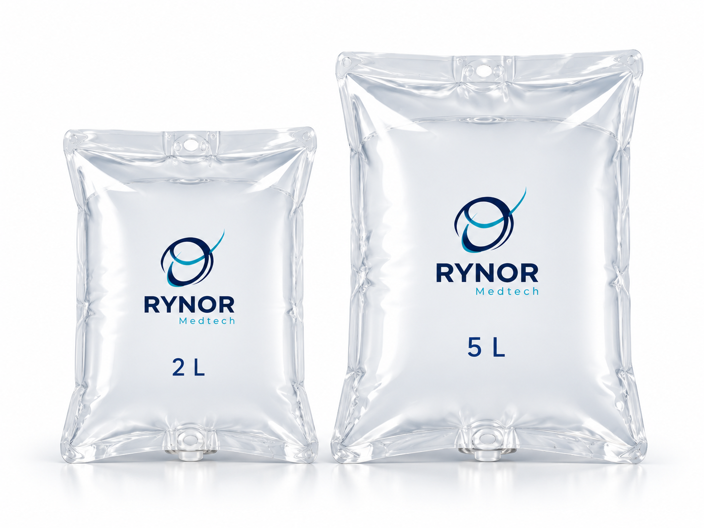
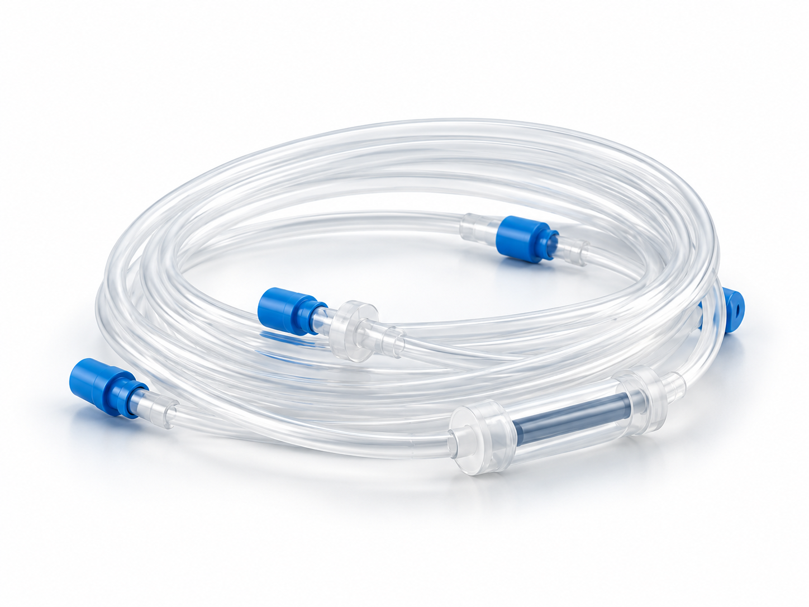
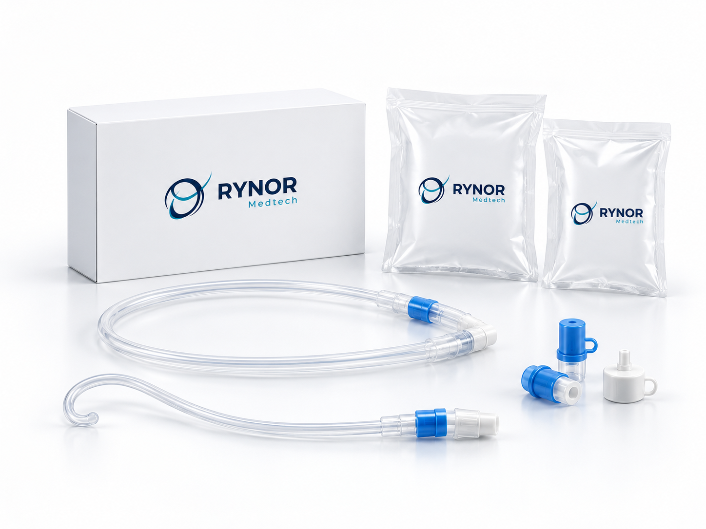

Planned for launch with the machine
Dialysis fluid bags
Two planned bag sizes within the RYNOR peritoneal dialysis range. Product details and final packaging will be shared before launch.
- 2 L
- 5 L
Supplies
Dialysis fluid bags, tubing, catheters and accessories—planned to launch together with the RYNOR machine.

Planned for launch with the machine
Two planned bag sizes within the RYNOR peritoneal dialysis range. Product details and final packaging will be shared before launch.

Planned for launch with the machine
A planned tubing range covering automated peritoneal dialysis (APD) and continuous ambulatory peritoneal dialysis (CAPD). Final configurations will be confirmed during development.

Planned for launch with the machine
The planned catheter portfolio includes swan-neck and curled variants. Final combinations, sizes and product specifications will be confirmed before launch.
Planned for launch with the machine
Mini-caps and related disinfection accessories are part of the planned supporting range. Final products and packaging remain in development.
Try a different search or view the complete planned range.
Looking ahead
We are also exploring future medical device categories. We will introduce new products when there are confirmed details to share.
The complete range is in development and is not yet available for sale. Illustrations show design concepts, not final product specifications or compatibility guidance.
For product enquiries, clinical collaboration and future partnerships.